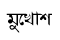
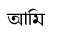
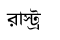
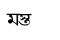
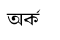
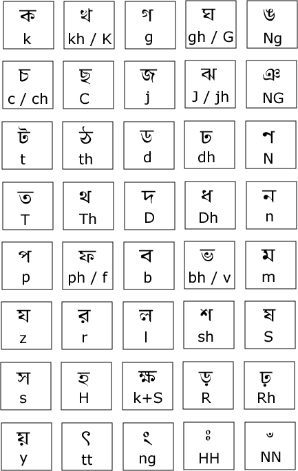
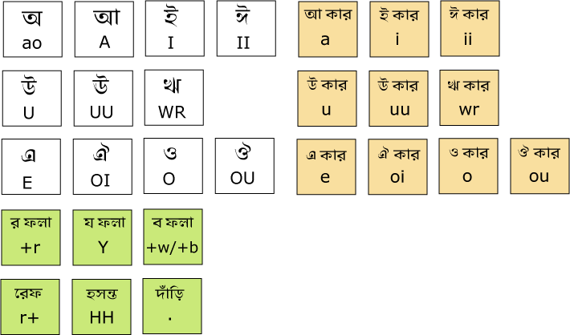

Take a look below at the character map. It shows you the key map to every character. You just press them and you will see bangla as output. As this is phonetic, You have to write kars after the character. Here are some examples:
|  | = mukhosh |
|  | = Ami |
remember, phonetic bangla is case sensitive
|  | = ras+t+ro |
|  | = mos+To |
|  | = aor+ko |

